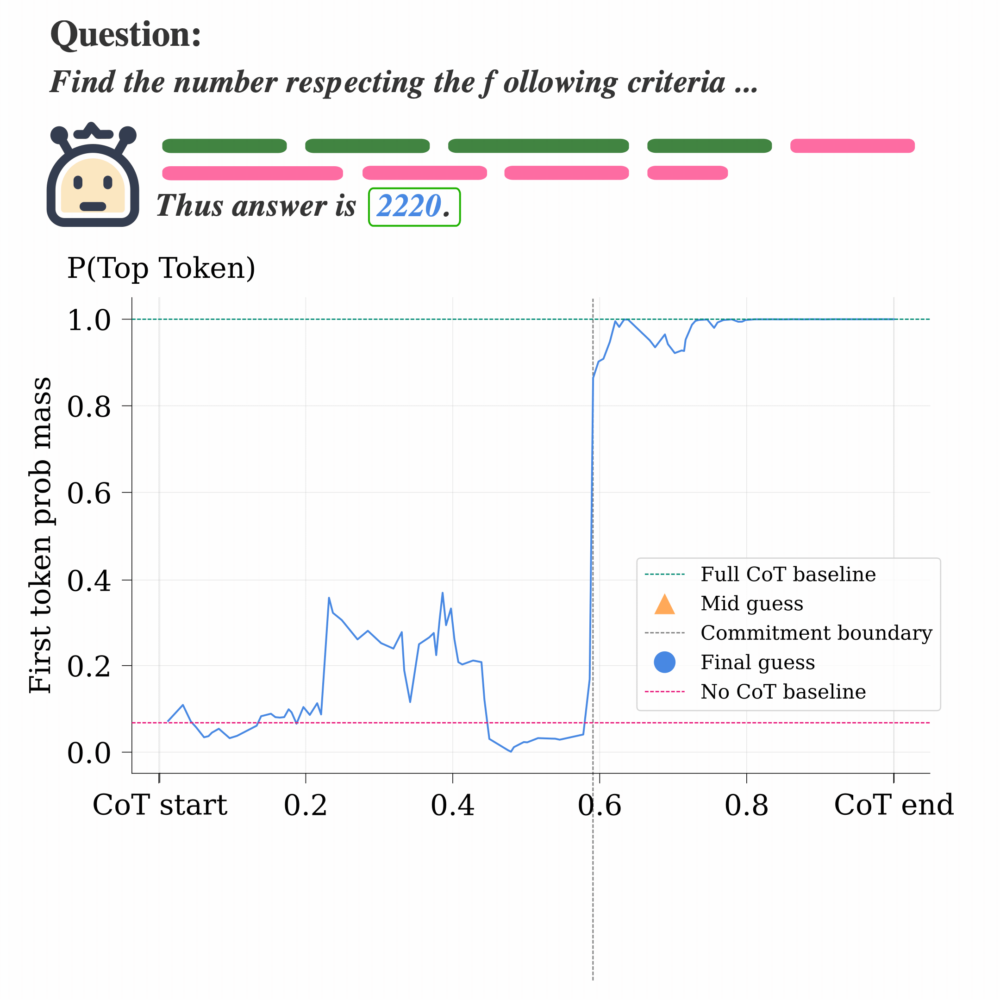

Interpretability · Chain-of-Thought · Reasoning Models
Models make up their minds before they say so.
A reasoning model’s final answer often stabilizes in one sharp step, well before its chain-of-thought ends. What follows can look like deliberation without changing the answer.
University of Groningen · University of Milano-Bicocca · University of Trieste · Northeastern University

The main claim
Chain-of-thought is not uniformly causal. Across three model families and four reasoning benchmarks, we find a commitment boundary: the point where the model’s final answer suddenly reaches full-trace confidence.
Before the boundary, reasoning can genuinely change the answer. After it, models often keep hedging, checking, and explaining—even though those steps leave the elicited final answer essentially unchanged.
How we locate it
We stop a reasoning trace after each sentence and ask the model for its answer. This gives a causal, step-by-step view of when intermediate guesses are revised and when the final answer becomes stable.
Cut the chain-of-thought after every reasoning step.
Force an answer from each partial trace.
Find the step where the full-trace answer sharply stabilizes.
A model searches for the smallest multiple of 30 written only with 0s and 2s.
Why it matters
A chain-of-thought can continue to sound uncertain after the model has already committed. Surface language alone is therefore an unreliable guide to whether genuine answer revision is still happening.
The boundary is also visible in model activations. Lightweight causal attention probes detect it across unseen reasoning tasks and can use it as an adaptive early-exit signal, skipping substantial post-commitment reasoning with little loss in answer accuracy.
Paper and citation
Beyond the Commitment Boundary: Probing Epiphenomenal Chain-of-Thought in Large Reasoning Models. 2026.
@article{scalena2026commitment,
title = {Beyond the Commitment Boundary: Probing Epiphenomenal
Chain-of-Thought in Large Reasoning Models},
author = {Scalena, Daniel and Candussio, Sara and Bortolussi, Luca
and Fersini, Elisabetta and Nissim, Malvina and Sarti, Gabriele},
year = {2026}
}